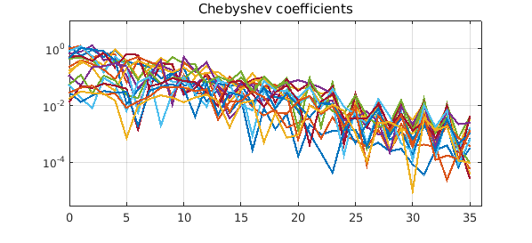

1. Tolerances in Chebfun
Chebfun's default tolerance is machine precision in 1D, 2D, and 3D:
chebfuneps chebfun2eps chebfun3eps
ans =
2.220446049250313e-16
ans =
2.220446049250313e-16
ans =
2.220446049250313e-16
In 1D, there is usually not much to be gained by loosening the tolerance (unless you are working with noisy functions), and we have long recommended that users leave chebfuneps at its factory value. (There is an FAQ question at www.chebfun.org on this topic.) In 2D and especially 3D, however, loosening the tolerance is often worthwhile. This is discussed in Section 18.10 of the Chebfun Guide.
The reason the default tolerance is machine precision is that accurate results are often easily achievable. For example, suppose we want to compute the triple integral $$ I = \int_{-1}^1 \int_{-1}^1 \int_{-1}^1 \exp(\sin(xyz + \exp(xyz))) dz dy dx . $$ We could do it like this,
tic f = chebfun3(@(x,y,z) exp(sin(x.*y.*z + exp(x.*y.*z)))); format long I = sum3(f) toc
I = 17.885693411606855 Elapsed time is 1.611389 seconds.
We could also do it like this:
tic cheb.xyz f = exp(sin(x.*y.*z + exp(x.*y.*z))); I = sum3(f) toc
I = 17.885693411606852 Elapsed time is 2.394291 seconds.
These results are quite satisfactory, because this chebfun3 is of only medium complexity:
f [m,n,p] = length(f)
f =
chebfun3 object
cols: [Inf x 25 chebfun]
rows: [Inf x 26 chebfun]
tubes: [Inf x 26 chebfun]
core: [25 x 26 x 26 double]
domain: [-1, 1] x [-1, 1] x [-1, 1]
vertical scale = 2.7
m =
42
n =
41
p =
42
2. Slowdown for complicated functions
On the other hand, if we make the function more complicated, things slow down:
tic g = chebfun3(@(x,y,z) exp(sin(10*x.*y.*z + exp(x.*y.*z)))); I = sum3(g) toc
I = 13.580020953068932 Elapsed time is 32.861994 seconds.
Here are the parameters of the more complicated function:
g [m,n,p] = length(g)
g = chebfun3 object cols: [Inf x 67 chebfun] rows: [Inf x 69 chebfun] tubes: [Inf x 69 chebfun] core: [67 x 69 x 69 double] domain: [-1, 1] x [-1, 1] x [-1, 1] vertical scale = 2.7 m = 156 n = 156 p = 156
3. Speedup if the tolerance is loosened
A considerable speedup can often be achieved by working with a looser tolerance. One way to construct the chebfun3 with tolerance $10^{-8}$ is like this:
tic g = chebfun3(@(x,y,z) exp(sin(10*x.*y.*z + exp(x.*y.*z))),'eps',1e-8); I = sum3(g) toc
I = 13.580020719458481 Elapsed time is 2.915666 seconds.
Note that the value of $I$ agrees with the previous result to quite a few digits. Here is the newly constructed chebfun3:
g [m,n,p] = length(g)
g =
chebfun3 object
cols: [Inf x 40 chebfun]
rows: [Inf x 38 chebfun]
tubes: [Inf x 37 chebfun]
core: [40 x 38 x 37 double]
domain: [-1, 1] x [-1, 1] x [-1, 1]
vertical scale = 2.7
m =
86
n =
86
p =
86
Sometimes one wants to loosen the tolerance globally, e.g. if there will be further computations, like this:
chebfun3eps 1e-8 tic cheb.xyz g = exp(sin(10*x.*y.*z + exp(x.*y.*z))); I = sum3(g) toc
I = 13.580023462274925 Elapsed time is 3.913049 seconds.
Let's try just four digits:
chebfun3eps 1e-4 tic g = exp(sin(10*x.*y.*z + exp(x.*y.*z))); I = sum3(g) toc
I = 13.606974798906183 Elapsed time is 1.131880 seconds.
The computed integral still has several correct digits.
Here are the Chebyshev coefficients of the rows of $g$. The columns and tubes are similar.
plotcoeffs(g.rows), ylim([3e-6 10])

As good citizens, we now return the tolerance to its factory value:
chebfun3eps factory